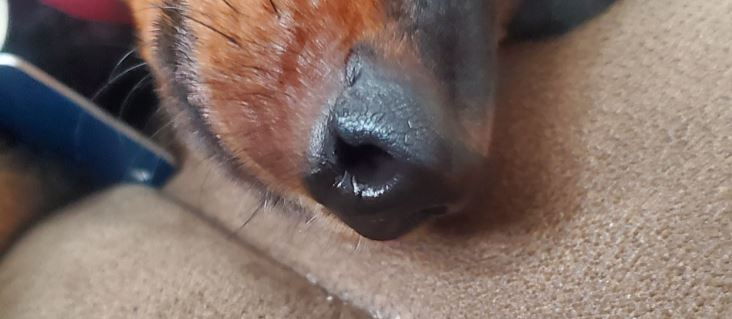

Stuffy nose in Dogs and Cats.
Dogs and cats get runny or stuffy nose just like humans do. It could be caused by many different things such as, being out in the rain, or playing in the snow for too long.
What can I give my stuffy dog for nasal congestion?
Just like in humans, our pets lose their sense of taste and smell whenever they get a runny or stuffy nose. Luckily for us, there are many home remedies or pharmacy medications that we can give our dogs or cats for a runny nose.
Unlike humans, dogs and cats use their nose to explore the world, so whenever they get a stuffy or runny nose, it is more irritating than when we as humans get them.
Common Medications for stuffy dogs
- Nasal Sprays
- Buffered Aspirin
Pediatric nasal spray and saline nasal spray can be given to dogs and puppies to help fight nasal congestion and dryness that is caused by a cold
This should be given to your dog once or twice per day with food. It helps relieve pain and is also an anti‐inflammatory medicine. Please follow the dosage listed in the table below for your size dog.
| Weight (Pounds) | Amount |
|---|---|
| less than 10 | 1⁄2 baby aspirin |
| 11 - 16 | 1 baby aspirin |
| 17 - 32 | 1⁄2 adult aspirin or 2 baby aspirin |
| 33 - 48 | 3⁄4 adult or 3 baby aspirin |
| 49 - 64 | 1 adult aspirin or 4 baby aspirin |
| 65 - 80 | 11⁄4 adult aspirin or 5 baby aspirin |
| 81 - 96 | 11⁄2 adult aspirin or 6 baby aspirin |
How can you tell if your dog or cat has a sinus infection?
The easiest way to tell if your dog or cat has a sinus infection is to observe to see if there are any type of nasal discharge. Other signs to look for would be nasal bleeding, purulent eye discharge, difficulty breathing, and watery eyes. If you notice any of these symptoms, contact your veterinarian to find out what your next move should be.
What are the signs of respiratory distress in a dog?
There are several signs to look out for to know if your dog or cat may have (ARDS) Acute Respiratory Distress. Before bringing in your pet to a veterinarian, check for these signs.
- Fever
- Difficulty breathing
- Coughing
- Blue-gray colored gums (cyanosis)
- Crackling noise during breathing
- Nasal Discharge
Why does my dog sound like he has a stuffy nose?
Your dog might sound like he/she has a stuffy nose because of a couple different reasons. The main reason might be a condition called Reverse Sneezing. Reverse Sneezing is where your dog makes repeated snorting noises that sound like he/she has a blocked nasal passageway. This is caused by irritation of the palate/laryngeal area. You will know your dog is experiencing Reverse Sneezing if you see him/her
How Is a Stuffy Nose in Dogs Similar to a Stuffy Nose in Humans?
- Humans and dogs both have mucus in their nasal passageways
- Dogs and humans can both have difficulty breathing due to blocked nasal passageways
- Bacteria affects both humans and dogs.
- Allegies affect both humans and dogs.
Causes of rhinitis in dogs and cats
There are many different things that can cause rhinitis in dogs and cats. Some of the main causes will be listed below.
- Viruses
- Allergies
- Bacteria
- Fungal Infections
- Cancer
- Foreign bodies
- Traumatic Injuries
Symptoms of rhinitis in dogs
- Excessive sneezing
- Bad breath
- Rubbing or pawing at the face
- Lack of scent ability
- Restlessness
- Weight loss
- Facial pain or swelling
- Unilateral nasal discharge
- Bilateral nasal discharge
- Open mouth breathing
- Nose bleed
- Lack of appetite
- Gagging
- Coughing
- Reverse sneezing
- Loss of appetite
- Labored breathing
Can I put Vicks on my stuffy dog?
No. Due to certain types of ingredients found in Vicks, it is not safe to put Vicks on your stuffy dog. The most dangerous ingredient is known as Camphor.
Is Honey safe for dogs?
Honey is safe for dogs as long as it is given in small amounts. During a cold, it can help to speed up the process of getting well with all the vitamins and minerals provided.
Stuffy nose in cats
Cats get stuffy nose just like dogs and humans do. However, in cats, a stuffy nose is called Rhinitis. Rhinitis is the condition where the lining of the nose (mucous membranes) becomes inflamed. Whenever the mucous membranes become inflamed, they usually cause swelling, and when swelling occurs, breathing becomes difficult.
Symptoms Of Rhinitis In Cats
The symptoms listed below can give you an idea if your cat is suffering from Rhinitis or not.
- Loss of appetite
- Laboured Breathing
- Nasal discharge
- Pawing at the face
- Breathing through the mouth
- Sneezing
How to treat rhinitis in cats?
To treat rhinitis in cats, firstly, a veterinarian has to figure out what the underlying cause of the illness is. This will ultimately tell the veterinarian the steps he/she needs to take to treat the rhinitis.
- Bacterial Rhinitis
- Nasal Flush
- Antifungal Medications
- Intravenous fluids & nutritional support
- Surgery
If the rhinitis is accompanied by any form of bacteria, then the veterinarian will prescribe the correct antibiotic to combat the infection.
This form of treatment is used for cats with severe rhinitis. A nasal flush will remove any blockage from the nasal passageway.
An antifungal treatment will be administered if the underlying cause of the infection is found to be any type of fungus.
Some dogs and cats are very resistant to drinking water of any type of fluids. However, just like us humans, cats and dogs need fluids and nutritional support to have a strong immune system.
Some times rhinitis gets to the point where surgery will be necessary. The medical procedure to take care of rhinitis is called rhinotomy is necessary when rhinitis causes the growth of cancerous lumps.
Do cat colds go away on their own?
Yes. Much like colds in humans, cat cold can go away too. Cat colds take anywhere between -2 weeks to clear up on its own. However, if there does not seem to be any health improvement by the start of the fourth day, a veterinarian must be contacted.
How do you help a cat that has a cold?
It is always good to offer warmed up cat food as this encourages the intake of needed nutrients into the body. Remove any discharge from their nose by wiping with a damp, clean cloth. Maybe the most important thing to do is to always make sure there is always enough drinking water available.
Can I put Vicks on my stuffy cat?
No. It is very dangerous to put vicks on your cats as certain chemicals within vicks is poisonous. The toxic element in vicks is known as Camphor.
Camphor poisoning signs
- Skin irritation
- Vomiting
- Depression
- Nausea
- Seizures (If taken in large amounts)
- Diarrhea
Conclusion
Stuffy nose in dogs and cats is not uncommon. It is up to us as their owners to find out what the best steps to take in order to treat them. The first line of defense for stuffy nose in dogs would be to contact a veterinarian to ask the necessary questions.